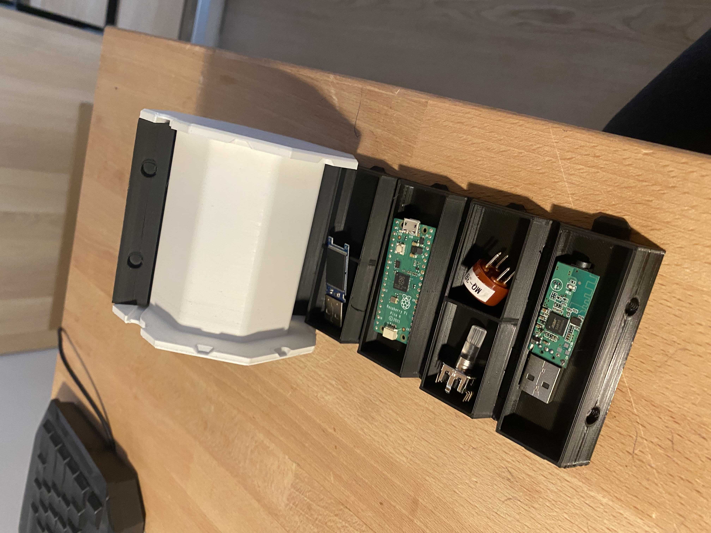

Ik kan redelijk keepen bij de hockey club waar ik het bij Wie ben ik al over had. Ook hou ik er van om met computers en microcontrollers bezig te zijn zo heb ik recent een raspberry pi pico gekregn van mijn oom. Verder kan ik tegenwoordig ook redelijk html programmeren door fundament en w3schools. Ook heb ik een Creality Ender 3 V2 gekocht van geld dat ik voor mijn verjaardag heb gekregen en ik heb daar verscheidene leuke dingetjes mee geprint zoals capybaras, blikopeners, storage containers en zelfs sleutels (die dus echt werken). Verder ben ik prima in tennis waar ik ook al bij wie ben ik over had verteld en kan ik ook nog wel een beetje piano spelen. Op school ben ik altijd al beter geweest in de bèta vakken zoals natuurkunde en scheikunde. Verder vindt Mats dat ik heel erg goed ben in dingen slopen zoals telefoons en computer, alleen vind ik persoonlijk dat ik die dingen niet sloop maar voorzichtig uit elkaar haal en het is niet mijn fout dat die voorwerpen dan kapot gaan. Verder zijn er niet heel veel dingen die ik kan.
